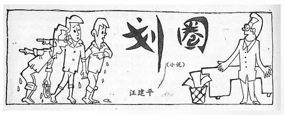
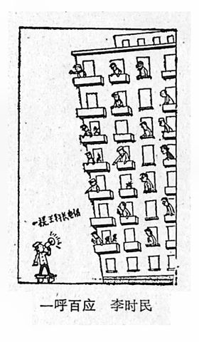
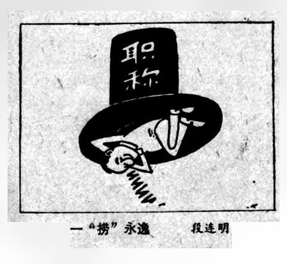
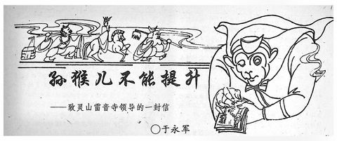

Promotion 19
-
 卖嘴"专业户" · A "Mouth-Selling Specialist"
卖嘴"专业户" · A "Mouth-Selling Specialist"
Yin Guoxing 尹国兴. Renshi (Personnel), 1986 no. 1 (whole no. 4), inside back cover. -
 信息早到了 · The News Got There First
信息早到了 · The News Got There First
Feng Sen 冯森. Renshi (Personnel), 1986 no. 1 (whole no. 4), inside back cover. -
 在议论声中…… · Amid All the Talk…
在议论声中…… · Amid All the Talk…
Wu Xinghong 吴兴宏. Renshi (Personnel), 1986 no. 2 (whole no. 5), p. 28. -
 无题 · Untitled
无题 · Untitled
Unattributed. Renshi (Personnel), 1986 no. 4 (whole no. 7), p. 43. Reprinted from Beijing ribao (Beijing Daily). -

划圈（题图） · Drawing Circles (header illustration)
He Fei 和非. Renshi (Personnel), 1986 no. 6 (whole no. 9), p. 48. -
 划圈（插图） · Drawing Circles (inset illustration)
划圈（插图） · Drawing Circles (inset illustration)
He Fei 和非. Renshi (Personnel), 1986 no. 6 (whole no. 9), p. 48. -
 朝"圣" · Pilgrimage to the Sage
朝"圣" · Pilgrimage to the Sage
Wang Xiaojian 王晓健. Renshi (Personnel), 1986 no. 8 (whole no. 11), p. 14. -
 "考察" · "Inspection"
"考察" · "Inspection"
Drawn by Li Yunqing 李云庆; adapted by Qian Ren 黔仁. Renshi (Personnel), 1986 no. 11 (whole no. 14), inside front cover. -
 好风凭借力 送我上青云 · On a Good Wind I Ride to the Blue Clouds
好风凭借力 送我上青云 · On a Good Wind I Ride to the Blue Clouds
Ji Xing 纪星. Renshi (Personnel), 1987 no. 2 (whole no. 17), inside back cover. -
 成才之后 · After Becoming Talent
成才之后 · After Becoming Talent
Wen Kexin 温克信. Renshi (Personnel), 1987 no. 5 (whole no. 20), p. 44. -
 为某君画像（插图） · Portrait of a Certain Gentleman (illustration)
为某君画像（插图） · Portrait of a Certain Gentleman (illustration)
Huang Yunzhong 黄允中. Renshi (Personnel), 1987 no. 7 (whole no. 22), p. 48. -
 到时候就闹 · When the Time Comes, It Goes Off
到时候就闹 · When the Time Comes, It Goes Off
Xue Sixiao 薛思孝. Renshi (Personnel), 1988 no. 1 (whole no. 28), p. 46. -

一呼百应 · One Call, a Hundred Answers
Li Shimin 李时民. Renshi (Personnel), 1988 no. 3 (whole no. 30), p. 45. -

一“捞”永逸 · Grab It Once, Settled for Good
Duan Lianming 段连明. Renshi (Personnel), 1989 no. 9 (whole no. 48), p. 39. -
 虽说大了点，但总算争到了 · A Bit Big, But At Least I Got Them
虽说大了点，但总算争到了 · A Bit Big, But At Least I Got Them
Drawn by Yang Shengping 杨升平. Renshi (Personnel), 1990 no. 1 (whole no. 52), p. 37. -
 紫砂壶（题图） · The Yixing Teapot (title illustration)
紫砂壶（题图） · The Yixing Teapot (title illustration)
Unattributed. Renshi (Personnel), 1990 no. 3 (whole no. 54), p. 40. -
 失算（插图） · A Miscalculation (illustration)
失算（插图） · A Miscalculation (illustration)
Unattributed. Renshi (Personnel), 1990 no. 5 (whole no. 56), p. 40. -

孙猴儿不能提升（题图） · The Monkey Must Not Be Promoted (title drawing)
Unattributed. Renshi (Personnel), 1990 no. 8 (whole no. 59), p. 40. -
 人事工作漫笔 · Sketches of Personnel Work
人事工作漫笔 · Sketches of Personnel Work
Sun Xiaoming 孙小鸣. Renshi (Personnel), 1990 no. 11 (whole no. 62), inside back cover.